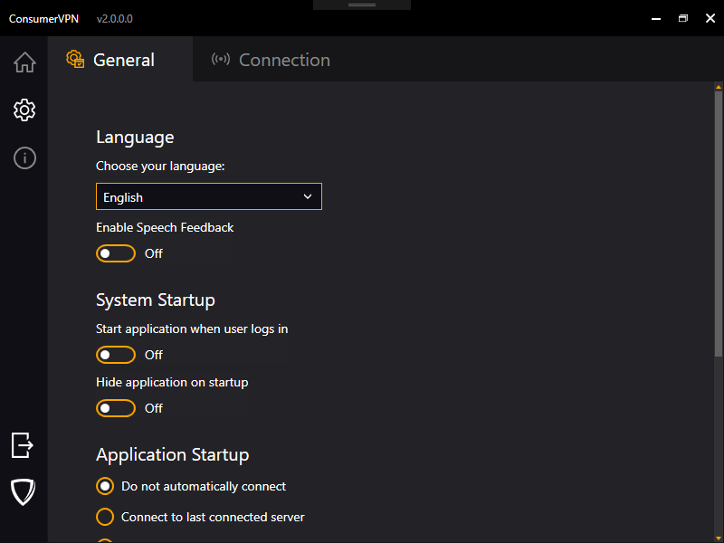
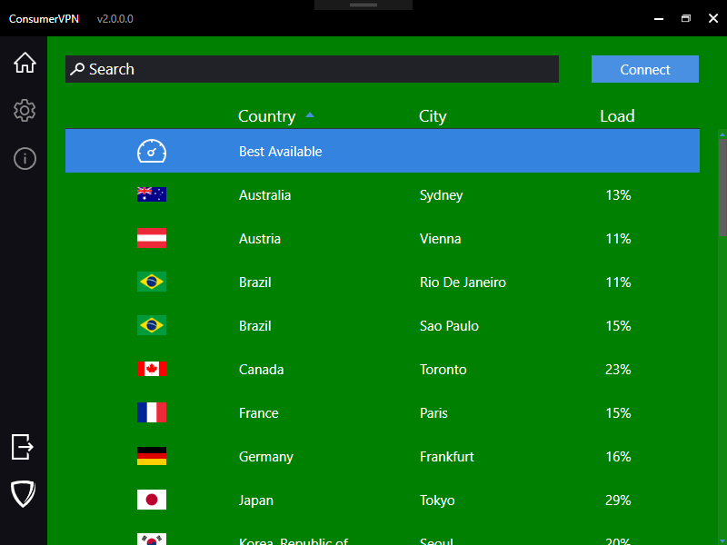

Branding ConsumerVPN
Provided to you is a copy of the example ConsumerVPN v2 client, a base application that can be easily modified to work with your design. Architected to be simple to iterate on, for most WLVPN partners, you will find yourself using it as a launching point.
Requirements
You will need to become a registered WLVPN reseller to run the application. If you have not done so already, please visit https://wlvpn.com/#contact to get started.
To create your own application from this template, you will need a copy of Visual Studio 2017 or 2019 (preferred). This can be obtained from here: https://www.visualstudio.com/vs/
Once Visual Studio has been installed, you will need to clone or download the repository for the ConsumerVPN application found at https://github.com/wlvpn/ConsumerVPN-v2-Windows. Make sure to checkout the v2 branch.
Once downloaded an extracted, open the ConsumerVPN.sln file in the extracted folder.
The application is a Microsoft .NET C# WPF application. It follows the normal MVVM patterns associated with a WPF application. This document does not detail the code in the application but how to change the look of the application generated from the code. The application targets .NET Framework 4.6.2 and you may need to install the targeting pack for that or alternatively change the target to .NET Framework 4.7.2.
To install .NET framework 4.6.2 either use Visual Studio Installer or download it directly from Microsoft website: https://www.microsoft.com/en-us/download/details.aspx?id=53344
We use the WiX toolset for building installers. You will also need to download and install the WiX Toolset build tools and WiX Toolset Visual Studio Extensions that are compatible with your environment from this link: http://wixtoolset.org/releases/.
The Wix installation will require you to enable .NET 3.5 on your machine. If WiX does not automatically do this for you, perform the following instructions:
- Press “Windows Logo” + “R” keys on the keyboard.
- Type “appwiz.cpl” in the “Run” command box and press “ENTER” on the keyboard or click Run.
- In the “*Programs and Features” window, click on the link “*Turn Windows features on or off**”.
- Check if the “*.NET Framework 3.5 (includes .NET 2.0 and 3.0)*” option is available in it.
- If yes, then enable it and then click on “*OK*”.
- Follow the on-screen instructions to complete the installation and restart the computer, if prompted.
If you run in to any errors, the following link will provide information from Microsoft on how to solve any potential issues.
Localization
The application supports different languages. Currently, there're English, Spanish, Hindi and Russian language strings available in this repository. You can add your own translation to any other languages. To do that, create a new resource file with the next name Strings.xx.resx under ConsumerVPN->Properties, where xx is 2-letter ISO language name (ex. en, bg, de).
For better work with translations, we recommend you to install ResXManager from Visual Studio Extensions portal. For Visual Studio 2019, you can find the extension here: https://marketplace.visualstudio.com/items?itemName=TomEnglert.ResXManager. Adding new languages and translations is much more easier with the ResXManager extension.
Navigating the project
Solution Structure
The application is divided in to the following solution structure.
| Folder / Namespace | Explanation / Usage |
|---|---|
| Behaviors | WPF behavior utilities |
| Controls | Custom controls and visual states |
| Enums | Various application enumerables |
| Extensions | Custom utility class extensions |
| Factories | Factory classes that the app uses |
| Helpers | Utility classes for dealing with all kinds of data |
| Input | Multi Key Gesture classes for hotkeys support |
| Interfaces | All interfaces |
| Resources | All visual resources are stored here. You will most likely be working in here. There is a branding subfolder in this which contains all the files required to be modified to make the application visually yours. |
| Utils | Utility classes |
| ValueConverters | Data converters for UI elements |
| ViewModels | View models (for standard MVVM development) for all views in the application. |
| Views | All the views the application uses. |
Things to change when branding
Application Settings
In the ConsumerVPN application properties (found by right clicking on the project in the solution explorer and then going to settings on the left-hand side bar) you will find the following settings.
- CallSettingsUpgrade - If
true, callApplicationSettingsBase.Upgrade()method on startup. It updates application settings to reflect a more recent installation of the application. Default istrue. More info here https://docs.microsoft.com/en-us/dotnet/api/system.configuration.applicationsettingsbase.upgrade - Username - User's username. Default is
String.Empty. - Password - User's password. Default is
String.Empty. - ConnectionProtocol - VPN protocol. Default is
VpnSDK.Enums.NetworkConnectionType.IKEv2. - OpenVpnProtocol - Network protocol that OpenVPN uses. Default is
VpnSDK.Enums.NetworkProtocolType.UDP. - KillSwitch - If
true, KillSwitch feature is on. Default istrue. - SelectedCity - Place where user's selected city is stored. Default is
String.Empty. - SelectedCountry - Place where user's selected country is stored. Default is
String.Empty. - AutoReconnect - If
true, the app tries to reconnect on VPN connection termination. Default isfalse. - BlockLANTraffic - If
true, the app blocks LAN traffic when KillSwitch is on. Default isfalse. - Scramble - OpenVPN scramble/obfuscate option. If
true, OpenVPN obfuscates its traffic. Default isfalse. - CloseStyle - Defines what happens when user tries to close the app. Default is
WLVPN.Enums.ApplicationCloseStyle.Dialog. - Culture Application culture, 2-letter ISO language name. Default is
String.Empty. - HideOnStartup - If
true, hide the app window on startup. - BetaOptIn - If
true, use Beta appcast URL, otherwise, use normal appcast URL. Default isfalse. - StartupType - Defines if the app connects to Last/Best location on startup or not. Default is
WLVPN.Enums.StartupType.NOP(No operation). - ReconnectTries - The number of reconnect tries. Default is
5. - EnableSpeech - If
true, enables Speech Engine. Default isfalse. - EnableShortcuts - If
true, enables application shortcuts. Default istrue. - CipherType - OpenVPN Cipher type. Default is
VpnSDK.Enums.OpenVpnCipherType.AES_256_CBC.
These are application settings with their default values. If you want different default values, this is the place where you can update them.
Application name and namespace
Under the Application section of the project properties, you will want to change the field Assembly Name to something along the lines of your application brand. For example, if you were called ExampleVPN, it would be suggested to call it ExampleVPN. As well as this, you should changed the Default Namespace to CompanyName.ApplicationName. Visual Studio will assist you in updating all the namespaces in the project files automatically, except namespaces in XAML files, that you will have to update manually.
Visual Settings
Each of the files in the Resources folder may be changed to have your visualization, especially files starting with Branding.*. Each file will be discussed in this section.
Branding.System.xaml
The Branding.System.xaml file is a WPF resource file that defines application settings.
ApiKey and AuthenticationToken will need to be updated to match the data provided to you by WLVPN SDK to ensure you're able to authorize to the backend and use all functionality.
<!-- Application Name -->
<system:String x:Key="ApplicationName">ConsumerVPN</system:String>
<!--
WLVPN API Key.
To obtain API Key you need to be a registered WLVPN reseller.
If you have not done so already, please visit https://wlvpn.com/#contact to get started.
-->
<system:String x:Key="ApiKey">YOURAPIKEY</system:String>
<!--
WLVPN API Authentication token
To obtain API Key you need to be a registered WLVPN reseller.
If you have not done so already, please visit https://wlvpn.com/#contact to get started.
-->
<system:String x:Key="AuthenticationToken">YOURAUTHTOKEN</system:String>
<!--
NetSparkle Updater Appcast URLs for stable and beta channels.
-->
<system:String x:Key="AppcastUrl">https://example.com/stable.xml</system:String>
<system:String x:Key="BetaAppcastUrl">https://example.com/beta.xml</system:String>
Branding.General.xaml
The Branding.General.xaml file is a WPF resource file that defines application images and URLs.
<!-- Application Icon -->
<ImageSource x:Key="ApplicationIcon">Icons/AppIcon.ico</ImageSource>
<!-- Company's website URL -->
<system:Uri x:Key="WebsiteUrl">https://example.com</system:Uri>
<!-- Forgot password URL -->
<system:Uri x:Key="ForgotPasswordUrl">https://example.com</system:Uri>
<!-- Sign Up URL -->
<system:Uri x:Key="SignUpUrl">https://example.com</system:Uri>
<!-- System Tray Icons -->
<ImageSource x:Key="DisconnectedIcon">Icons/AppIcon.ico</ImageSource>
<ImageSource x:Key="ConnectedIcon">Icons/AppIconConnected.ico</ImageSource>
<!-- Login Screen Logo -->
<BitmapImage x:Key="LoginLogoImage" UriSource="pack://application:,,,/Resources/Images/LoginViewLogo.png" />
<!-- Login Screen Background -->
<ImageSource x:Key="LoginBackgroundImage">Images/LoginBackground.png</ImageSource>
<!-- Connected Screen Background Image -->
<BitmapImage x:Key="ConnectedBackgroundImage" UriSource="pack://application:,,,/Resources/Images/DottedMap.png" />
Branding.Colors.xaml
The Branding.xaml file is a WPF resource file that defines brushes and colors used in various places within the application. Resources are defined in this file using the normal WPF Resource definition forms. If you wish to change a color or a brush, this is the file where you do it. The keys and values defined in the file are shown below and are generally self-explanatory. Refer to the key names to get a better understanding of what the value represents.
<!-- Generic colors and brushes -->
<Color x:Key="AccentColor">#FF4A90E2</Color>
<SolidColorBrush x:Key="AccentBrush" Color="{StaticResource AccentColor}" />
<Color x:Key="AccentColor1">#3483de</Color>
<SolidColorBrush x:Key="AccentBrush1" Color="{StaticResource AccentColor1}" />
<Color x:Key="AccentColor2">#2275d7</Color>
<SolidColorBrush x:Key="AccentBrush2" Color="{StaticResource AccentColor2}" />
<Color x:Key="AccentColor3">#30363E</Color>
<SolidColorBrush x:Key="AccentBrush3" Color="{StaticResource AccentColor3}" />
<Color x:Key="AccentColor4">#1b5dab</Color>
<SolidColorBrush x:Key="AccentBrush4" Color="{StaticResource AccentColor4}" />
<Color x:Key="IdealForegroundColor">#FFFFFFFF</Color>
<SolidColorBrush x:Key="IdealForegroundBrush" Color="{StaticResource IdealForegroundColor}" />
<Color x:Key="IdealForegroundDisabledColor">#8b8b8b</Color>
<SolidColorBrush x:Key="IdealForegroundDisabledBrush" Color="{StaticResource IdealForegroundDisabledColor}" />
<Color x:Key="IdealBackgroundDisabledColor">#333333</Color>
<SolidColorBrush x:Key="IdealBackgroundDisabledBrush" Color="{StaticResource IdealBackgroundDisabledColor}" />
<!-- Specific colors and brushes -->
<!-- Window Background -->
<Color x:Key="WindowBackgroundColor">#0f0f15</Color>
<SolidColorBrush x:Key="WindowBackgroundBrush" Color="{StaticResource WindowBackgroundColor}" />
<!-- Window Title -->
<Color x:Key="WindowTitleColor">#22000000</Color>
<SolidColorBrush x:Key="WindowTitleBrush" Color="{StaticResource WindowTitleColor}" />
<SolidColorBrush x:Key="WindowSecondTitleBrush"
Opacity="0.4"
Color="{StaticResource IdealForegroundColor}" />
<!-- Dialog Window -->
<Color x:Key="DialogOverlayColor">#DD000000</Color>
<SolidColorBrush x:Key="DialogOverlayBrush" Color="{StaticResource DialogOverlayColor}" />
<Color x:Key="DialogBackgroundColor">#0f0f15</Color>
<SolidColorBrush x:Key="DialogBackgroundBrush" Color="{StaticResource DialogBackgroundColor}" />
<SolidColorBrush x:Key="DialogBorderBrush" Color="{StaticResource AccentColor2}" />
<!-- Information and Settings Tab controls -->
<Color x:Key="TabHeaderBackgroundColor">#232327</Color>
<SolidColorBrush x:Key="TabHeaderBackgroundBrush" Color="{StaticResource TabHeaderBackgroundColor}" />
<Color x:Key="TabContentBackgroundColor">#232327</Color>
<SolidColorBrush x:Key="TabContentBackgroundBrush" Color="{StaticResource TabContentBackgroundColor}" />
<!-- Main Tab Control background -->
<Color x:Key="ContentBackgroundColor">#161618</Color>
<SolidColorBrush x:Key="ContentBackgroundBrush" Color="{StaticResource ContentBackgroundColor}" />
<!-- Progress Wheel -->
<SolidColorBrush x:Key="SpinnerBrush" Color="{StaticResource AccentColor1}" />
<!-- Disconnect Button -->
<Color x:Key="DisconnectButtonColor">#FFD0021B</Color>
<SolidColorBrush x:Key="DisconnectButtonBrush" Color="{StaticResource DisconnectButtonColor}" />
<!-- Search Bar -->
<Color x:Key="SearchBarBackgroundColor">#212228</Color>
<SolidColorBrush x:Key="SearchBarBackgroundBrush" Color="{StaticResource SearchBarBackgroundColor}" />
<!-- ScrollBar -->
<SolidColorBrush x:Key="ScrollBarUpDownBrush" Color="{DynamicResource AccentColor}" />
<SolidColorBrush x:Key="ScrollBarThumbBrush" Color="#606060" />
<SolidColorBrush x:Key="ScrollBarBackgroundBrush" Color="#11FFFFFF" />
<!-- ToggleSwitch control brushes -->
<SolidColorBrush x:Key="ToggleSwitch.Static.Background" Color="#01FFFFFF" />
<SolidColorBrush x:Key="ToggleSwitch.Static.Border" Color="{DynamicResource AccentColor}" />
<SolidColorBrush x:Key="ToggleSwitch.Static.Glyph" Color="{DynamicResource IdealForegroundColor}" />
<SolidColorBrush x:Key="ToggleSwitch.MouseOver.Background" Color="#01FFFFFF" />
<SolidColorBrush x:Key="ToggleSwitch.MouseOver.Border" Color="{DynamicResource AccentColor2}" />
<SolidColorBrush x:Key="ToggleSwitch.MouseOver.Glyph" Color="{DynamicResource IdealForegroundColor}" />
<SolidColorBrush x:Key="ToggleSwitch.MouseOver.On.Background" Color="{DynamicResource AccentColor}" />
<SolidColorBrush x:Key="ToggleSwitch.MouseOver.On.Border" Color="{DynamicResource AccentColor}" />
<SolidColorBrush x:Key="ToggleSwitch.MouseOver.On.Glyph" Color="{DynamicResource IdealForegroundColor}" />
<SolidColorBrush x:Key="ToggleSwitch.Disabled.Background" Color="#00FFFFFF" />
<SolidColorBrush x:Key="ToggleSwitch.Disabled.Border" Color="#FF999999" />
<SolidColorBrush x:Key="ToggleSwitch.Disabled.Glyph" Color="#FF999999" />
<SolidColorBrush x:Key="ToggleSwitch.Disabled.On.Background" Color="#FFCCCCCC" />
<SolidColorBrush x:Key="ToggleSwitch.Disabled.On.Border" Color="#FFCCCCCC" />
<SolidColorBrush x:Key="ToggleSwitch.Disabled.On.Glyph" Color="#FFA3A3A3" />
<SolidColorBrush x:Key="ToggleSwitch.Pressed.Background" Color="#FF999999" />
<SolidColorBrush x:Key="ToggleSwitch.Pressed.Border" Color="#FF999999" />
<SolidColorBrush x:Key="ToggleSwitch.Pressed.Glyph" Color="{DynamicResource IdealForegroundColor}" />
<SolidColorBrush x:Key="ToggleSwitch.Checked.Background" Color="{DynamicResource AccentColor}" />
<SolidColorBrush x:Key="ToggleSwitch.Checked.Border" Color="{DynamicResource AccentColor}" />
<SolidColorBrush x:Key="ToggleSwitch.Checked.Glyph" Color="{DynamicResource IdealForegroundColor}" />
There are quite a lot of colors to change but don't get too scared. Nearly every color can be modified to your hearts content to ensure your application color scheme fits with the palette you wish to use for your brand.
Image Assets
Within the Resources/Icons/ and Resources/Images/ folders, you will find multiple images to replace to make the client look how you wish it to. Keep in mind, it is suggested to keep them the same size unless you intend on modifying the view XAML files to fit everything correctly.
| Image Description | Image | Filename |
|---|---|---|
| An image of the countries on earth done in the style of a dot painting. This shows on the main screen, when a VPN connection is established. (520x263) |  |
DottedMap.png |
| An image of the icon used for the system tray icon as well as the logo in the about screen. Ensure this is a multi-dimension (16x16 up to 256x256) .ico file. | AppIcon.ico | |
| An image of the icon used for the system tray icon, it is visible when the app is connected. Ensure this is a multi-dimension (16x16 up to 256x256) .ico file. | AppIconConnected.ico | |
| An image of the application splash screen. (300 x 300) |  |
SplashScreen.png |
| An image of the logo used on the left side of the Login View. (234 x 49) |  |
LoginViewLogo.png |
| An image of the Login View background. (379 x 600) |  |
LoginBackground.png |
| A vector version of the icon used on Connected View. | ConnectedCheckMark.xaml | |
| A vector version of the icon used for Diagnostics tab item. | Diagnostics.xaml | |
| A vector version of the icon used for General Settings tab item. | GeneralSettings.xaml | |
| A vector version of the icon used near IP info on Connected View. | Globe.xaml | |
| A vector version of the icon used for Help tab item. | Help.xaml | |
| A vector version of the icon used for Main view tab item. | Home.xaml | |
| A vector version of the icon used for Information tab item. | Info.xaml | |
| A vector version of the icon used for Licenses tab item. | License.xaml | |
| A vector version of the icon used near Location info on Connected View. | Location.xaml | |
| A vector version of the icon used on Login View for password field. | Lock.xaml | |
| A vector version of the icon used for "home site" button that is available post-authentication on all views. | Logo.xaml | |
| A vector version of the icon used for Logout button. | Logout.xaml | |
| A vector version of the icon used for Search input. | MagnifyingGlass.xaml | |
| A vector version of the icon used for Settings tab item. | Settings.xaml | |
| A vector version of the icon used on Connected View. | Shield.xaml | |
| A vector version of the icon used for Connection Settings tab item. | Signal.xaml | |
| A vector version of the icon used for Best Available DataGrid item. | Speedometer.xaml | |
| A vector version of the icon. | Tos.xaml | |
| A vector version of the icon used on Login View for username field. | User.xaml | |
Resources/Images/Flags directory. The list of available flags. The filename represents 2-letter ISO country name. |
ad.png, us.png & etc. |
Library licenses
The licenses.rtf file is a compilation of the licenses used for the 3rd party products used in this application. If you leave it as is, it should be fine. If you change the application logic and add any 3rd party libraries, you will need to update this file with the appropriate licenses.
Building the Application and making it yours
Getting the Code
The code is kept in a git repository at https://github.com/wlvpn/ConsumerVPN-v2-Windows. Clone the repository using your git client of choice on to your local machine. The solution file in the repository is named VpnSDK.WLVpn.sln. Using an instance of Visual Studio 2019 running as an administrator, open the ConsumerVPN.sln file to begin.
Configuring Visual Studio to use the WLVPN NuGet feed
Your account manager will provide you the details required to add the private WLVPN NuGet feed to your instance of Visual Studio. Using the provided details, follow the instructions provided by Microsoft here on how to add an external NuGet repository, this will allow you to use the VpnSDK package as well as others that may be required depending on your requirements. (Note: Do not follow any instructions past the linked paragraph as they are for VSTS configurations.)
Changing the Branding
You can change all the colors and links used by the application by changing values in the Branding.Colors.xaml and Branding.General.xaml file. Start by changing one of the colors to something glaring and then looking at the application to better understand the relationship between the definitions and where they are used in the application. For instance, changing one of the default accent colors to Orange gives us the following.
AccentColor to Orange
<Color x:Key="AccentColor">Orange</Color>

Another example would be changing the WindowBackgroundColor key to Green.
Content Control color to Green
<Color x:Key="ContentBackgroundColor">Green</Color>

All of these resources can be found in {PROJECT_ROOT}\src\ConsumerVPN\Resources\.
Just as you can easily change the colors or the images by modifying the files in the Branding folder, you can modify all the text strings in the Strings.XX.resx files, where XX is 2-letter ISO country code.